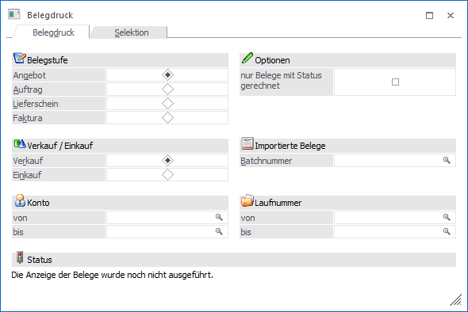

Belege können entweder sofort nach dem Erfassen gedruckt oder zu einem späteren Zeitpunkt in einem Stapeldruck ausgegeben werden. Des Weiteren besteht die Möglichkeit mehrere Belege in einem Prozess in einer Folgestufe drucken zu lassen. All diese Funktionen werden über den Menüpunkt…
1 WinLine FAKT
1 Erfassen
1 Belegdruck
1 Belege drucken
… zur Verfügung gestellt.

Das Fenster unterteilt sich in die folgenden Register, welche in den nachfolgenden Kapiteln beschrieben werden:
ü Register "Belegdruck"
In dem
Register "Belegdruck" können Selektionen und Einstellungen für den Druck der
Belege vorgenommen werden.
ü Register "Selektion"
In dem
Register "Selektion" kann eine manuelle Selektion erfolgen, ob und welche Belege
ausgegeben werden sollen.
Buttons

Ø Ok
Durch Anwahl des Buttons "Ok" bzw. der Taste F5 werden die Belege, entsprechend der vorgenommen manuellen Selektion, gedruckt. Wurden das Register "Selektion" im Vorfeld nicht angewählt, so erfolgt eine Abfrage, ob der Druck trotzdem vorgenommen werden soll (auf Grundlage des Registers "Belegdruck").
Hinweis 1
Handelt es sich um einen neu zu erstellenden Beleg (d.h. ein Beleg wird in eine weiterführende Belegstufe) gewandelt, dann wird als Belegdatum automatisch das aktuelle Tagesdatum (Datum des Einlogvorgangs) verwendet.
Hinweis 2
Bei dem Druck erfolgt im Hintergrund eine Prüfung, ob bei Debitorenfakturen nur Gegenkonten mit einem Steuerkennzeichen "U" bzw. ohne Steuerkennzeichen verwendet wurden, bzw. bei Kreditorenfakturen nur Gegenkonten mit einem Steuerkennzeichen "V" bzw. ohne Steuerkennzeichen. Ist dies nicht der Fall, dann wird eine entsprechende Meldung ausgegeben.
Hinweis 3
Beim Druck der einzelnen Belege werden abhängig von der auszugebenden Belegstufe Stammdatenbereiche und Bewegungsdaten aktualisiert:
ü Angebot / L.Anfrage
ü ---
ü Auftrag / L.Bestellung
ü Erzeugung der Rückstandsliste (Artikelbedarfsvorschau)
ü Lieferschein / L.Lieferschein
ü Aktualisierung der Rückstandsliste (Artikelbedarfsvorschau)
ü Lagerupdate
ü Faktura / L.Faktura
ü Provisionsabrechnung
ü Verkaufsstatistik
ü Artikel- und Kundenupdate
ü Bereitstellung der FIBU- und KORE-Daten
Ø Ende
Durch Drücken des Buttons "Ende" bzw. der Taste ESC wird das Fenster geschlossen und keine Belege erstellt.
Ø Filter bearbeiten
Durch Anklicken des Buttons "Filter bearbeiten" kann die Selektion von Belegen nach frei definierbaren Kriterien eingeschränkt werden.